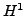
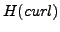

High-order finite elements have become increasing popular in scientific applications due to their spectral convergence properties. More accurate solutions can be achieved using fewer degrees of freedom. However, the resulting matrices suffer from large condition number and reduced sparsity - both detrimental to the performance of the iterative solver. Many widely used packages (Trilinos, FEniCS, etc) implement high-order bases of interpolatory type. However, there has not been much research on efficient solvers for such bases. In this talk we overview high-order interpolatory bases for  (nodal) and  (edge) spaces, and we present an AMG based method for solving systems discretized by high-order bases of interpolatory type.
Efficient solvers based on multigrid techniques have been developed to
tackle problems successfully. For the lowest-order elements,
these methods require hybrid smoothers which perform additional block
relaxation on the gradient space. The given matrix is projected onto the
gradient space using a discrete gradient operator. In addition, the
intergrid transfer operators are induced by aggregates in an auxiliary
nodal problem. We extend these ideas to high-order compatible finite
elements of interpolatory type. We will show how to construct discrete
gradient operators for such high-order bases and how to utilize
 -multigrid coarsening techniques to produce an amenable solver for
these problems.
-multigrid coarsening techniques to produce an amenable solver for
these problems.